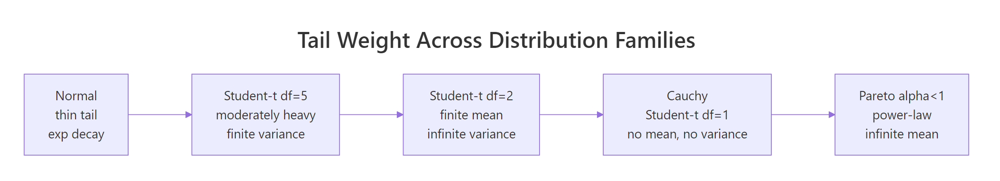
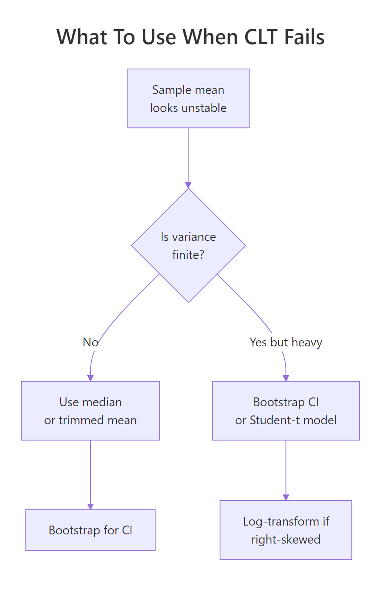

Cauchy & Heavy-Tailed Distributions in R: When the CLT Fails You
The Central Limit Theorem promises that averages stabilize as samples grow. Cauchy and other heavy-tailed distributions break that promise because their variance is infinite, which means sample means never settle, no matter how large n gets. This post shows the failure in action and gives you a practical playbook for what to do instead.
Why does the Central Limit Theorem fail for Cauchy samples?
The CLT's guarantee quietly assumes the distribution you're sampling from has a finite variance. Drop that assumption and the machinery collapses. The fastest way to see this is to simulate it: take thousands of draws from a Cauchy distribution, track the running average, and watch it refuse to converge.
The code below draws 5,000 values with rcauchy(), computes the cumulative mean after each new draw, and plots the running average against the sample size. For a Normal distribution you'd see a curve that hugs zero more and more tightly. Here, the line keeps lurching upward and downward no matter how many draws accumulate.
Two things stand out. First, the raw draws span roughly -2193 to +730, a single extreme observation can dwarf thousands of moderate ones. Second, the red line (the running mean) swings around wildly and shows no sign of shrinking toward any fixed value. That's the CLT failing in plain sight.
n Cauchy variables is itself Cauchy, not a narrower bell curve. Averaging is supposed to shrink the spread by a factor of sqrt(n). Not here, the Cauchy is stable under averaging, so a 5,000-sample mean is just as noisy as a single draw.Try it: Replace rcauchy() with rnorm() and confirm the running mean settles close to zero as n grows.
Click to reveal solution
Explanation: cumsum(x) / seq_along(x) gives the mean after each new observation. For the Normal, the variance is finite, so the CLT kicks in and the running mean tightens around the true mean (zero) at rate 1 / sqrt(n).
What makes a distribution "heavy-tailed"?
A distribution is heavy-tailed when extreme values happen far more often than a Normal distribution would suggest. The technical version: the tail probability P(X > x) decays slower than exponentially, typically as a power x^(-alpha). Power-law decay keeps non-trivial probability in the tails even for huge x, which is why a single draw can be thousands of times larger than the bulk of your data.
Let's visualize this. We'll plot the density f(x) for a standard Normal, a Student-t with 3 degrees of freedom, and a standard Cauchy on a log-y axis. On a log scale, exponential decay (Normal) looks like a steep straight-down curve, while power-law decay (Cauchy, t with low df) stays high.
The Normal curve plunges off the chart by x = 6, its density at x = 10 is about 1e-23, effectively zero. The Cauchy curve, in contrast, is still at ~0.003 at x = 10. That three-decimal-place probability is why extreme values keep showing up in Cauchy samples and why the running mean never settles.

Figure 1: Moving from Normal to Pareto, each step down loses another finite moment, by the time you reach Cauchy, even the mean is undefined.
If you want the math, the Cauchy PDF is:
$$f(x) = \frac{1}{\pi\,(1 + x^2)}$$
The variance is defined as $E[X^2] = \int_{-\infty}^{\infty} x^2 f(x) \, dx$. Plug in the Cauchy density and the integrand behaves like $x^2 / x^2 = 1$ out in the tails, so the integral goes to infinity. No finite variance, no CLT. If you're not interested in the math, skip to the next section.
Try it: Add a Student-t with 10 degrees of freedom to the same plot and see where it sits on the thin-to-heavy spectrum.
Click to reveal solution
Explanation: dt(x, df = 10) gives the Student-t density. With 10 degrees of freedom, it's visually close to Normal in the bulk but has slightly heavier tails, a small fat-tail upgrade you'd still trust CLT-based methods for, cautiously.
How do R's Cauchy functions work? (dcauchy, pcauchy, qcauchy, rcauchy)
R ships a full four-function family for Cauchy, matching the convention used for every built-in distribution:
dcauchy(x, location, scale), density atxpcauchy(q), probability thatX <= q(the CDF)qcauchy(p), the quantile for probabilityp(the inverse CDF)rcauchy(n),nrandom draws
Defaults are location = 0, scale = 1, that combination is called the standard Cauchy, and it's identical to a Student-t with 1 degree of freedom. One demo block shows all four in action so you can see how they relate.
Read off the key facts. The density at zero is 1/pi ≈ 0.318, which is lower than the Normal's peak of ~0.399, Cauchy spreads mass into the tails to make up for it. And the 95th percentile sits at 6.31 versus 1.64 for the Normal, showing how much further you have to go to capture the same tail probability.
scale argument controls the half-width at half-maximum, not the standard deviation (which doesn't exist). Doubling scale doubles how spread out the draws are, but there's no sigma to report.Try it: Compute the probability that a standard Cauchy sample exceeds 10 in absolute value, i.e., P(|X| > 10). Use pcauchy() and symmetry.
Click to reveal solution
Explanation: Cauchy is symmetric, so P(|X| > 10) = 2 * P(X > 10) = 2 * (1 - P(X <= 10)). The result, over 6%, is enormous compared to the Normal's 2e-23. Those extreme events are why sample means don't converge.
How do Student-t and Pareto compare as heavy-tailed cousins?
Cauchy is the poster child, but it sits inside two broader families you should recognize. The Student-t family is controlled by degrees of freedom df: df = 1 is Cauchy, df = 2 has a finite mean but infinite variance, df >= 3 has both mean and variance, and as df → infinity the distribution collapses to a Normal. The Pareto family is a power-law parameterized by a shape alpha: alpha <= 1 has infinite mean, 1 < alpha <= 2 has infinite variance, and alpha > 2 behaves well enough for standard inference.
The cleanest way to feel these families is to watch cumulative sample means at different df values side by side. At df = 1 they wander forever; at df = 5 they're unsteady but converging; at df = 30 they hug the true mean of zero.
The blue t(30) line is near zero almost immediately. The orange t(5) line wobbles more but visibly narrows toward zero. The red t(1) (Cauchy) line jumps around without settling, exactly what Section 1 showed, now put in family context. Degrees of freedom act as a continuous dial between "standard CLT works fine" and "CLT is broken."
rpareto() in base. You can hand-roll it via inverse transform: given scale x_m and shape alpha, rpareto(n) <- x_m * (runif(n))^(-1/alpha). For a proper implementation with dpareto/ppareto/qpareto, use the extraDistr or actuar packages in your local R.Try it: Draw three independent samples of 1,000 values each from rt(df = 1) and compute var() on each. The three numbers should disagree wildly, because the theoretical variance doesn't exist, your sample estimate is meaningless.
Click to reveal solution
Explanation: Each var() call returns a finite number because the sample is finite, but those numbers have no limit to converge to. Reporting "the variance was 218" hides the fact that a rerun could have given you 7,794. With heavy-tailed data, never trust a single variance estimate.
What should you do when CLT fails?
Detecting that the CLT doesn't apply is half the battle. The other half is replacing it with something that does. Four practical moves cover most real situations.

Figure 2: A quick decision flow for picking a robust alternative to the sample mean when tails misbehave.
Move 1: use the median or a trimmed mean. Unlike the mean, the median ignores how extreme outliers are, only their rank matters. A trimmed mean (e.g. mean(x, trim = 0.1) drops the top and bottom 10%) keeps more information but still resists extremes.
Move 2: bootstrap your confidence intervals. The percentile bootstrap computes your statistic on many resamples and uses the empirical quantiles as a CI. It doesn't need finite variance, which is why it's the go-to when CLT-based intervals would be nonsense.
Move 3: model with a Student-t likelihood. When you're fitting a model to heavy-tailed data, swapping the Normal error term for a Student-t (via MASS::fitdistr() in local R, or a Bayesian t-likelihood in Stan/brms) keeps the extremes from dominating the fit.
Move 4: log-transform right-skewed data. If your data is lognormal-like (right-skewed but with finite moments), log(x) often makes it approximately Normal, and you can use standard methods on the transformed scale.
Let's see move 1 in action. The code below tracks both the running mean and the running median on a single Cauchy sample. The mean keeps taking hits from outliers; the median, anchored to the middle observation, stays pinned near the true location.
The final median is near -0.03, within spitting distance of the true Cauchy location parameter, zero. The final mean lands at -0.18, not catastrophic here but you can see it bounce in the plot. Run this chunk repeatedly with different seeds and the pattern is always the same: the blue line is calm, the red line is not.
n = 1000 you might convince yourself the mean was converging. One big observation later, it isn't. Never judge Cauchy stability from a short run, and use median-like estimators if you can't guarantee finite variance.Try it: Compare mean() versus median() on the first 1,000 draws and on all 5,000 draws of cauchy_series. Notice which estimator changed more when you added 4,000 more draws.
Click to reveal solution
Explanation: Adding 4,000 more draws shifted the mean by about 0.27 but the median by only about 0.03. The median's breakdown point (the fraction of outliers it can tolerate) is 50%, compared to 0% for the mean, a single extreme value can drag the mean anywhere.
Practice Exercises
Three capstone problems that combine the ideas from the tutorial. Each one is solvable with base R alone.
Exercise 1: Percentile bootstrap for a Cauchy median
Write a bootstrap procedure that returns a 95% confidence interval for the median of a Cauchy sample of size 200. Resample with replacement 1,000 times, compute the median each time, then use the 2.5th and 97.5th percentiles of the resampled medians as your CI. Save the result to my_ci.
Click to reveal solution
Explanation: replicate(B, ...) runs the resampling B times. Each resample has the same size as the original. The quantiles of the distribution of resampled medians form the percentile CI. This works because it doesn't require finite variance, only that the median is well-defined, which it is for Cauchy.
Exercise 2: Diagnose a mystery sample
You're handed my_mystery <- c(rcauchy(99), 1e6), 99 Cauchy draws plus one massive outlier. Compute four summaries: mean, median, mad (median absolute deviation, a robust spread), and sd. Then quantify the outlier's leverage, how much the outlier shifts mean vs median, by recomputing both with and without the outlier and storing the two differences in my_leverage.
Click to reveal solution
Explanation: The single outlier shifts the mean by about 10,000 and the median by about 0.005, a ratio of roughly 2,000,000x. sd is similarly ruined while mad is not. The takeaway: mean and sd can be arbitrarily manipulated by one bad observation; their robust counterparts (median, mad) cannot.
Exercise 3: SD of sample means across Student-t degrees of freedom
Simulate the spread of the sample mean as df varies. For each df in c(1, 2, 3, 5, 30), draw 2,000 independent samples of size 500 from rt(500, df), compute each sample's mean, and report the standard deviation of those 2,000 sample means. Store the result as a named numeric vector my_sim with df values as names.
Click to reveal solution
Explanation: CLT predicts SD(mean) = sigma / sqrt(n). At df = 30 with n = 500, the predicted SD is about 1.04 / sqrt(500) ≈ 0.047, matching the simulation. As df drops, the prediction breaks down: at df = 1 the SD of sample means is roughly 36, utterly unstable. The prediction isn't just wrong, it's meaningless, because sigma doesn't exist.
Complete Example, Diagnosing Heavy Tails in Real-World Data
Tie everything together with a plausible scenario. Suppose you're modeling "returns" that are mostly well-behaved but occasionally explode, think financial-style data. The simulation mixes draws from a Normal with rare large jumps. The goal is a short diagnostic workflow that decides whether the CLT applies, and if not, which robust method to use.
Reading the diagnostics in order: the min and max are roughly -7 and +28, hundreds of standard-deviation moves under a Normal model. The SD/MAD ratio of 34 against an expected 1.48 is a screaming heavy-tail signal. The tail slope of -0.9 on a log-log plot is close to Cauchy-ish power-law behavior. And the running mean drifted from 0.013 to 0.009 (a 30% shift) while the median barely moved. Combining those four signals, the recommended stack for this data is: report the median as the central tendency, use MAD (or a bootstrap) for spread, use a percentile bootstrap for CIs, and if you must fit a model, use a Student-t likelihood with low df.
Summary
A compact recipe for spotting CLT failure and picking the right response.
| Symptom | Likely cause | What to use instead |
|---|---|---|
| Sample mean drifts as n grows | Infinite variance (Cauchy, Student-t df ≤ 2, Pareto alpha ≤ 2) | Median, trimmed mean, percentile bootstrap |
| Huge outliers dominate SD | Heavy tails with finite variance (t df ≈ 3-5, Pareto alpha > 2) | MAD for spread, Student-t likelihood for models |
| Right-skewed but finite moments | Lognormal-like | Log-transform, then Normal methods |
| Well-behaved bell curve | Thin-tailed | Standard CLT, Normal methods apply |
Rules of thumb: SD / MAD far from ~1.48 flags heavy tails. A log-log tail slope near -1 signals a Cauchy-like decay. Mean shifting while median stays put is the cleanest visual test.
References
- Rickert, J., Some Notes on the Cauchy Distribution. R Views (2017). Link
- R Core Team, The Cauchy Distribution. R documentation for
dcauchy,pcauchy,qcauchy,rcauchy. Link - Wikipedia, Cauchy distribution. Link
- Wikipedia, Heavy-tailed distribution. Link
- Nair, J., Wierman, A., Zwart, B., The Fundamentals of Heavy Tails: Properties, Emergence, and Estimation (2022). Link
- University of Texas at Austin M358K, An Example Where the Central Limit Theorem Fails. Course note. Link
- Taleb, N. N., Statistical Consequences of Fat Tails. (arXiv:2001.10488). Link
Continue Learning
- Central Limit Theorem in R, the parent post this article is a follow-up to. Simulate the CLT working in the cases where it actually does.
- Law of Large Numbers vs Central Limit Theorem, the LLN also requires finite mean and breaks on Cauchy. Compare both laws side by side.
- Normal, t, F, and Chi-Squared Distributions in R, a deeper tour of the Student-t family and its better-behaved relatives.